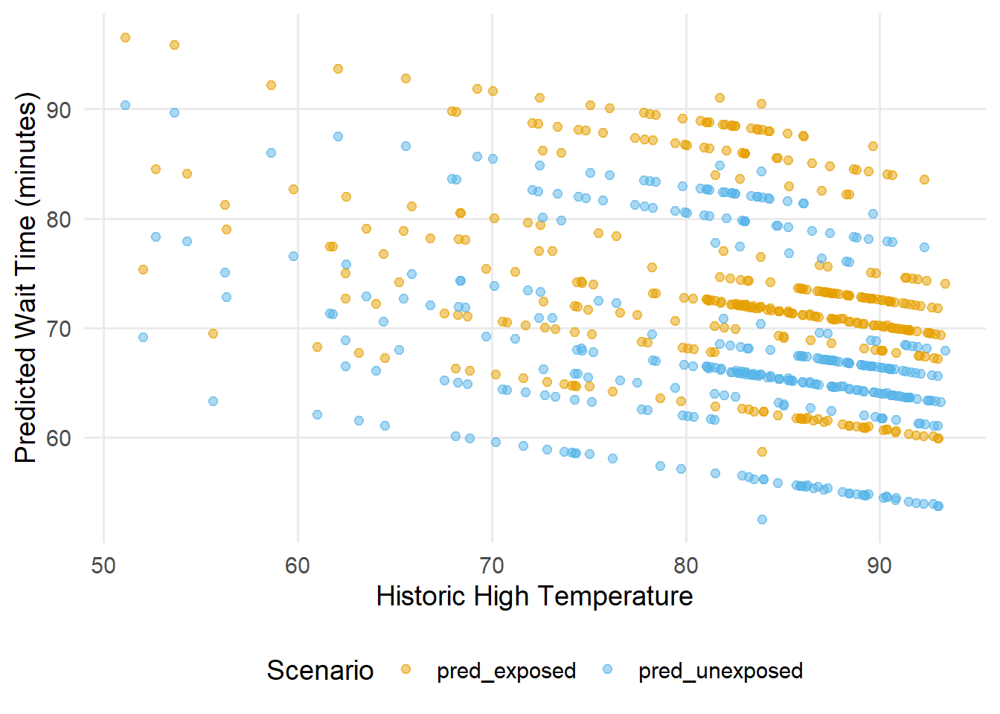
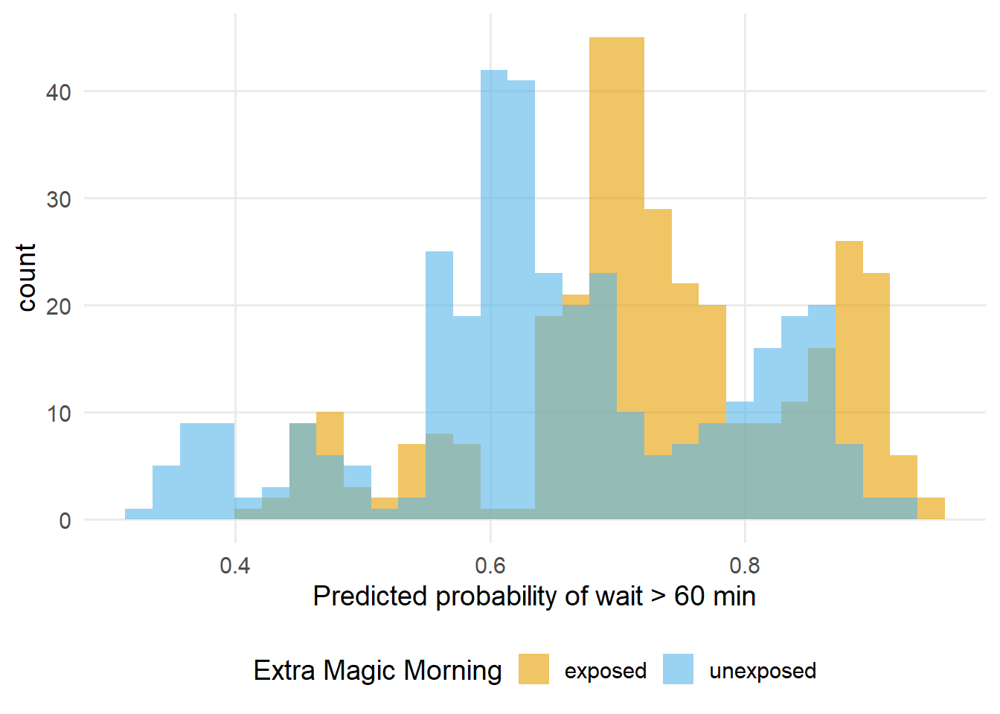
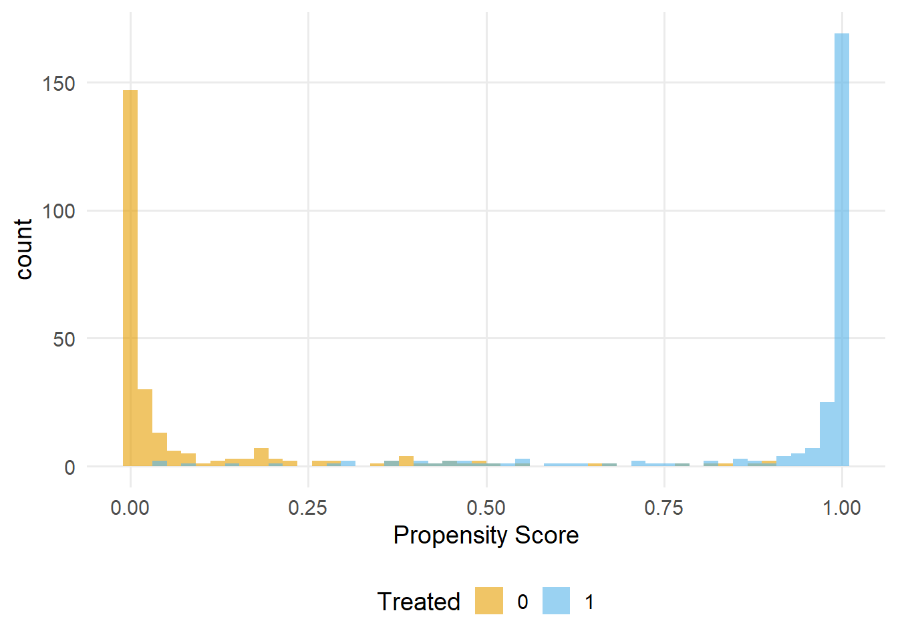
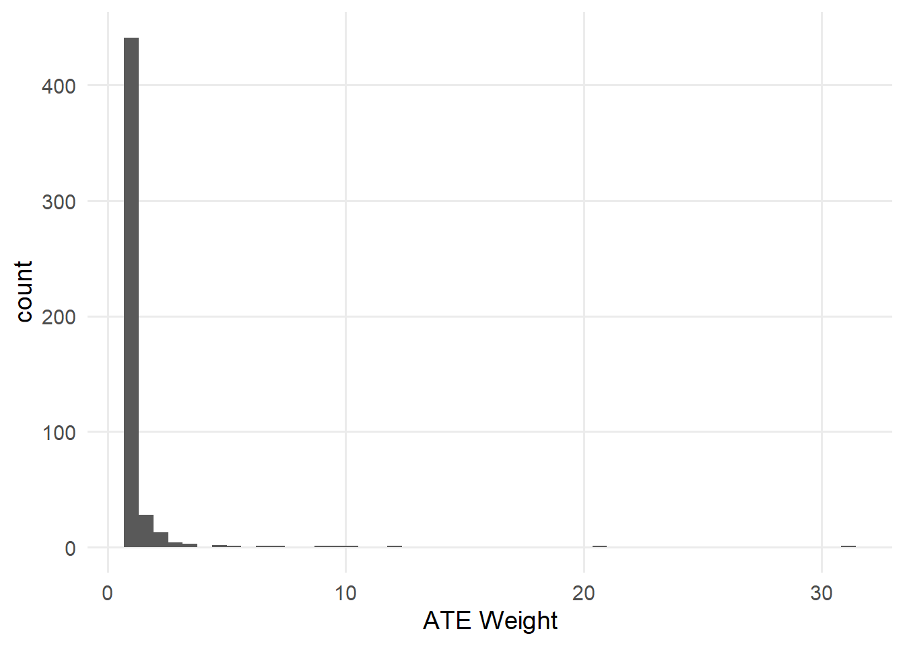
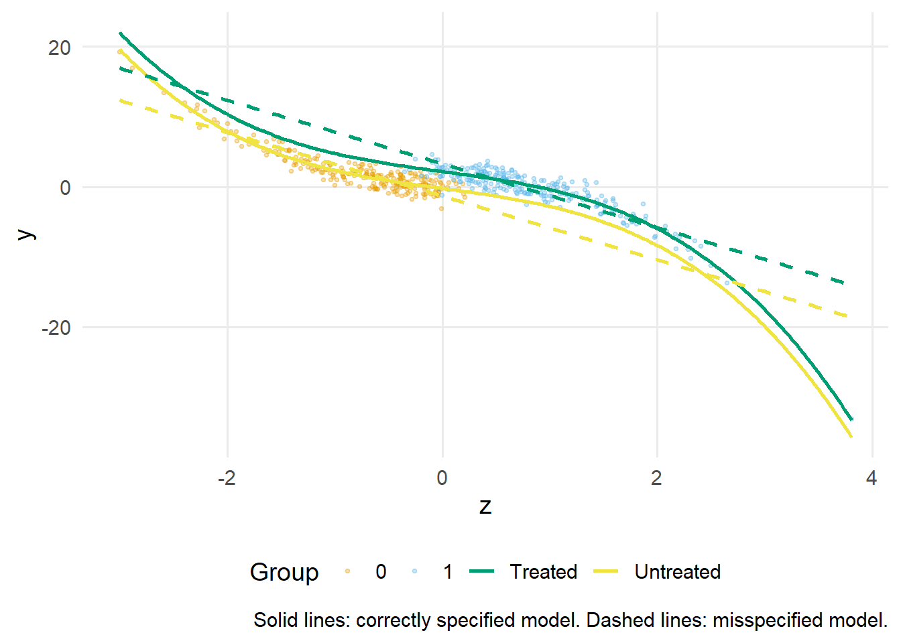

警告Work-in-progress 🚧
You are reading the work-in-progress first edition of Causal Inference in R. This chapter is actively undergoing work and may be restructured or changed. It may also be incomplete.
G-computation · 原书逐章中译
来源：Malcolm Barrett、Lucy D’Agostino McGowan、Travis Gerke，Causal Inference in R · G-computation。 本页为中文翻译；原书代码块、公式、图表交叉引用和引用键均按原文保留。统计图在网页渲染时由 R 代码生成，静态插图直接引用原文件。 原书仓库采用 CC BY-NC-SA 4.0；代码采用 MIT 许可。请遵守原许可证并注明作者。
You are reading the work-in-progress first edition of Causal Inference in R. This chapter is actively undergoing work and may be restructured or changed. It may also be incomplete.
参数 g 公式通过结局建模，为因果估计提供了直接方法。 与本书目前采用的通过重新加权观测值来平衡混杂因子的方法不同，我们将结局建模为暴露和协变量的函数，然后利用该模型预测不同暴露情景下会发生什么。 通过在整个人群中对这些预测取平均，我们得到因果效应的估计值。
我们首先拟合条件结局模型。 需要特别注意的是，这意味着必须正确指定结局模型的函数形式。 如果模型设定错误，我们的因果估计就会产生偏倚。 结局模型必须包含根据因果图确定的调整集中的所有变量。 与基于加权和匹配的方法一样，有效推断的前提是，该调整集足以识别我们关注的因果效应。 模型拟合完成后，可以在将暴露设为目标水平的反事实情景下生成预测。 随后对得到的预测结局取平均，从而得到每个假设干预下预期结局的估计值。 这种方法被称为“参数”方法，因为我们假设结局服从特定的参数模型（例如线性回归或逻辑回归）。
这种方法有几个优点：它可以自然地处理多个暴露比较，通过灵活建模容纳复杂关系；当结局比暴露分配更容易建模时，它还可能更有效率。 本章将从单一暴露时间点的情形开始，用二元和连续暴露展示 g 公式的核心逻辑。
我们再次考虑 Extra Magic Morning 时段是否会影响 9 点至 10 点之间 Seven Dwarfs Mine Train 游乐设施的平均公布等待时间，如 数据简介 所述，并假设 图 62.1 提出的相同数据生成机制。 要实施参数 g 公式，我们将（1）拟合包含暴露和所有混杂因子的结局模型，（2）创建两个版本的数据集，将每个观测分别设为暴露或未暴露，（3）利用拟合模型为每个版本生成预测结局，（4）对这些预测取平均，按暴露构造边际均值，（5）计算边际均值之差，以估计平均处理效应。
我们先拟合结局模型，其中包含暴露（park_extra_magic_morning）和所有混杂因子（当天历史最高气温 park_temperature_high、公园闭园时间 park_close 以及票务季节 park_ticket_season）。
library(tidyverse)
library(broom)
library(touringplans)
seven_dwarfs_9 <- seven_dwarfs_train_2018 |>
filter(wait_hour == 9)
gcomp_model <- lm(
wait_minutes_posted_avg ~
park_extra_magic_morning +
park_ticket_season +
park_close +
park_temperature_high,
data = seven_dwarfs_9
)然后，我们针对暴露的每个唯一水平复制 seven_dwarfs_9 数据集（本例中有两个水平：暴露和未暴露）。 其中一个副本将每个公园日期都设为发生了 Extra Magic Morning 时段，另一个副本则将每个公园日期都设为未发生该时段。 这些反事实数据集代表暴露被统一设为各个取值时的假想世界。
exposed <- seven_dwarfs_9 |> mutate(park_extra_magic_morning = 1)
unexposed <- seven_dwarfs_9 |> mutate(park_extra_magic_morning = 0)为了直观理解这些反事实数据集的样子，直接检查它们会很有帮助。 原始数据中的每一行都会被“克隆”两次：一次进入发生 Extra Magic Morning 时段的世界，另一次进入未发生该时段的世界。 两个克隆的协变量完全相同，只有暴露取值不同。
bind_rows(
exposed |> mutate(clone = "exposed"),
unexposed |> mutate(clone = "unexposed")
) |>
select(
park_date,
clone,
park_extra_magic_morning,
park_ticket_season,
park_temperature_high
) |>
arrange(park_date) |>
slice_head(n = 6)# A tibble: 6 x 5
park_date clone park_extra_magic_morning
<date> <chr> <dbl>
1 2018-01-01 exposed 1
2 2018-01-01 unexposed 0
3 2018-01-02 exposed 1
4 2018-01-02 unexposed 0
5 2018-01-03 exposed 1
6 2018-01-03 unexposed 0
# i 2 more variables: park_ticket_season <chr>,
# park_temperature_high <dbl>利用之前拟合的结局模型，我们为每个反事实数据集生成预测结局并取平均。 这些平均值（边际均值）表示所有人都暴露或没有人暴露时的预期公布等待时间。 然后可以计算这两个边际均值之差，以估计 Extra Magic Morning 对公布等待时间的因果效应。
pred_exposed <- gcomp_model |>
augment(newdata = exposed) |>
select(pred_exposed = .fitted)
pred_unexposed <- gcomp_model |>
augment(newdata = unexposed) |>
select(pred_unexposed = .fitted)
bind_cols(pred_exposed, pred_unexposed) |>
summarize(
mean_exposed = mean(pred_exposed),
mean_unexposed = mean(pred_unexposed),
difference = mean_exposed - mean_unexposed
)# A tibble: 1 x 3
mean_exposed mean_unexposed difference
<dbl> <dbl> <dbl>
1 74.2 68.1 6.16我们可以将每种情景下的预测等待时间对某个协变量作图来直观展示这一过程，例如此处使用历史最高气温。
bind_cols(
seven_dwarfs_9 |> select(park_date, park_temperature_high),
pred_exposed,
pred_unexposed
) |>
pivot_longer(
cols = starts_with("pred"),
names_to = "scenario",
values_to = "predicted_wait"
) |>
ggplot(aes(x = park_temperature_high, y = predicted_wait, color = scenario)) +
geom_point(alpha = 0.5) +
labs(
x = "Historic High Temperature",
y = "Predicted Wait Time (minutes)",
color = "Scenario"
)
每个点代表某个公园日期在暴露和未暴露情景下的预测值。 由于我们使用的是线性模型，两组预测值相互平行（也就是说，它们之间的间隔在整个气温范围内保持不变）。 该间隔在所有公园日期上的平均值，就是平均处理效应的估计值。 请注意，我们没有代入某个单一的“代表性”协变量值；而是使用每个观测的实际协变量取值生成预测，再取平均。 这就是对协变量分布进行边际化的含义，也是 g 计算区别于直接从结局模型中提取系数之处。
{marginaleffects} 软件包让其中一些计算变得简单，也有助于量化不确定性。 例如，我们不必创建单独的反事实数据集，而可以直接使用 average_comparisons 函数计算平均处理效应。
library(marginaleffects)
ate <- avg_comparisons(
gcomp_model,
variables = "park_extra_magic_morning"
)
ate
Estimate Std. Error z Pr(>|z|) S 2.5 % 97.5 %
6.16 2.26 2.73 0.00636 7.3 1.74 10.6
Term: park_extra_magic_morning
Type: response
Comparison: 1 - 0这里值得暂停一下，将其与 因果估计目标 中的框架联系起来。 无论使用 IPW 还是结局模型，估计目标都是相同的：\(E[Y(1)−Y(0)]\)，即平均处理效应。 不同之处在于估计量，也就是我们用来得到该结果的步骤。 在 拟合加权结局模型 中使用 IPW 时，我们重新加权观测数据，使不同暴露组之间的混杂因子达到平衡。 在上面的 g 计算中，我们拟合结局模型，直接估计每个暴露水平下的潜在结局，再计算它们的平均差异。 既然这是得到同一块蛋糕的不同配方，就不应惊讶于它们在实践中可能产生略有不同的估计值。 每种方法都依赖自身的建模假设：IPW 依赖于正确设定的倾向评分模型，而结局模型依赖于正确设定的结局模型。 当这些模型以不同方式设定错误时，估计值就会出现差异。
当 {marginaleffects} 计算平均处理效应等量的不确定性估计时，它依赖于 Delta 方法，这是一种近似估计参数变换后方差的技术。 如果有一个系数向量 \(\hat{\boldsymbol{\beta}}\)，其方差—协方差矩阵为 \(\Sigma\)，并且希望计算某个函数 \(g(\hat{\boldsymbol{\beta}})\) 的方差（例如预测概率或边际效应），那么 Delta 方法给出：
\[ \text{Var}\left[g(\hat{\boldsymbol{\beta}})\right] \approx \nabla g(\hat{\boldsymbol{\beta}})^\top \, \Sigma \, \nabla g(\hat{\boldsymbol{\beta}}) \]
其中，\(\nabla g\) 是相对于 \(\boldsymbol{\beta}\) 的函数 \(g\) 的梯度。 {marginaleffects} 会自动计算该梯度，并通过 \(\Sigma\) 传播它，从而得到标准误。
正如我们在 因果估计目标 中讨论的，ATE 并不是唯一值得关注的因果估计目标。 通过改变所取平均的协变量分布，g 计算可以直接针对不同的估计目标。 对于 ATE，我们在完整的观测样本上对预测取平均。 对于 ATT，我们只在暴露者的协变量分布上取平均（本例中即实际经历了 Extra Magic Morning 时段的日期）。 对于 ATC，我们只在未暴露者上取平均。 三种情形使用相同的结局模型；变化的是生成预测时使用谁的协变量值。 我们可以在 avg_comparisons 中使用 newdata 参数，直接针对这些估计目标：
# ATE: average over the full sample
avg_comparisons(
gcomp_model,
variables = "park_extra_magic_morning"
)
Estimate Std. Error z Pr(>|z|) S 2.5 % 97.5 %
6.16 2.26 2.73 0.00636 7.3 1.74 10.6
Term: park_extra_magic_morning
Type: response
Comparison: 1 - 0# ATT: average over exposed observations only
avg_comparisons(
gcomp_model,
variables = "park_extra_magic_morning",
newdata = filter(seven_dwarfs_9, park_extra_magic_morning == 1)
)
Estimate Std. Error z Pr(>|z|) S 2.5 % 97.5 %
6.16 2.26 2.73 0.00636 7.3 1.74 10.6
Term: park_extra_magic_morning
Type: response
Comparison: 1 - 0# ATC: average over unexposed observations only
avg_comparisons(
gcomp_model,
variables = "park_extra_magic_morning",
newdata = filter(seven_dwarfs_9, park_extra_magic_morning == 0)
)
Estimate Std. Error z Pr(>|z|) S 2.5 % 97.5 %
6.16 2.26 2.73 0.00636 7.3 1.74 10.6
Term: park_extra_magic_morning
Type: response
Comparison: 1 - 0在本例中，由于结局模型不包含暴露与协变量之间的交互作用项，三个估计值将相同。 不含交互作用的线性模型假设处理效应在所有协变量取值下都恒定，因此无论对谁的协变量分布取平均，我们得到的间隔始终相同。 若要通过 g 计算观察到 ATE、ATT 和 ATC 之间的差异，结局模型需要允许暴露效应随协变量变化，例如加入 park_extra_magic_morning * park_ticket_season 这样的交互作用项。 让我们重新拟合模型，看看这些差异。
gcomp_model_int <- lm(
wait_minutes_posted_avg ~
park_extra_magic_morning +
park_ticket_season +
park_close +
park_temperature_high +
park_extra_magic_morning * park_ticket_season,
data = seven_dwarfs_9
)
# ATE: average over the full sample
avg_comparisons(
gcomp_model_int,
variables = "park_extra_magic_morning"
)
Estimate Std. Error z Pr(>|z|) S 2.5 % 97.5 %
5.05 2.33 2.17 0.0302 5.1 0.484 9.62
Term: park_extra_magic_morning
Type: response
Comparison: 1 - 0# ATT: average over exposed observations only
avg_comparisons(
gcomp_model_int,
variables = "park_extra_magic_morning",
newdata = filter(seven_dwarfs_9, park_extra_magic_morning == 1)
)
Estimate Std. Error z Pr(>|z|) S 2.5 % 97.5 %
6.34 2.23 2.84 0.00448 7.8 1.97 10.7
Term: park_extra_magic_morning
Type: response
Comparison: 1 - 0# ATC: average over unexposed observations only
avg_comparisons(
gcomp_model_int,
variables = "park_extra_magic_morning",
newdata = filter(seven_dwarfs_9, park_extra_magic_morning == 0)
)
Estimate Std. Error z Pr(>|z|) S 2.5 % 97.5 %
4.79 2.38 2.01 0.0445 4.5 0.118 9.47
Term: park_extra_magic_morning
Type: response
Comparison: 1 - 0一旦指定了至少一个交互作用，三个估计值就可能不同，因为暴露日期和未暴露日期往往具有不同的协变量分布。 ATT 询问的是：对于实际经历了 Extra Magic Hours 的那些日期类型，处理效应是什么；ATC 询问的是：对于没有经历该时段的那些日期类型，处理效应会是什么。 如果处理效应在所有协变量取值下都恒定，三个估计值就会一致。 当它们出现差异时，这种分歧本身就能提供关于人群中处理效应异质性的信息。
当结局为二元变量时，同样的 g 计算逻辑仍然适用，但现在关注的量有三个，而不是一个：风险差、风险比和优势比（见 二元结局：风险比、风险差和优势比）。 三者都来自同一套 g 计算流程；变化的只是我们对每个暴露下的预测概率所应用的函数。
我们重新使用 二元结局：风险比、风险差和优势比 中等待时间结局的二元版本，拟合一个逻辑回归 g 计算模型，并使用与连续版本相同的混杂因子。
seven_dwarfs_9 <- seven_dwarfs_9 |>
mutate(wait_over_60 = wait_minutes_posted_avg > 60)
gcomp_bin <- glm(
wait_over_60 ~
park_extra_magic_morning +
park_ticket_season +
park_close +
park_temperature_high,
data = seven_dwarfs_9,
family = binomial()
)我们可以重新使用前面的 exposed 和 unexposed 克隆（本问题中的暴露没有改变，因此反事实情景相同）：预测每个情景下的结局概率，对预测取平均，然后将两个均值合并为所需的效应测量。
probs <- bind_cols(
augment(gcomp_bin, newdata = exposed, type.predict = "response") |>
select(p_exposed = .fitted),
augment(gcomp_bin, newdata = unexposed, type.predict = "response") |>
select(p_unexposed = .fitted)
)将每个反事实情景下的预测概率作图，可以看出这些边际均值概括了什么。 暴露组的分布略向右移，这正是正风险差在个体预测层面呈现出的样子。
probs |>
pivot_longer(
everything(),
names_to = "extra_magic_morning",
values_to = "predicted_prob",
names_prefix = "p_"
) |>
ggplot(aes(x = predicted_prob, fill = extra_magic_morning)) +
geom_histogram(alpha = 0.6, position = "identity", bins = 30) +
labs(
x = "Predicted probability of wait > 60 min",
fill = "Extra Magic Morning"
)
现在计算每个结局测量。
probs |>
summarize(
p_exposed = mean(p_exposed),
p_unexposed = mean(p_unexposed),
rd = p_exposed - p_unexposed,
rr = p_exposed / p_unexposed,
or = (p_exposed / (1 - p_exposed)) /
(p_unexposed / (1 - p_unexposed))
)# A tibble: 1 x 5
p_exposed p_unexposed rd rr or
<dbl> <dbl> <dbl> <dbl> <dbl>
1 0.728 0.651 0.0763 1.12 1.43这样可以得到点估计，但没有不确定性。 当然，我们可以像对本书讨论过的任何技术那样进行 Bootstrap；不过这里让 marginaleffects 为我们计算标准误。 avg_comparisons() 会给出相同的数值，以及通过 Delta 方法计算的标准误和置信区间，并通过其 comparison 参数选择效应测量。 默认值 "difference" 给出风险差：暴露者与未暴露者预测概率之差的平均值。
# Risk difference (ATE)
ate_rd <- avg_comparisons(
gcomp_bin,
variables = "park_extra_magic_morning"
)
ate_rd
Estimate Std. Error z Pr(>|z|) S 2.5 % 97.5 %
0.0763 0.0638 1.2 0.232 2.1 -0.0487 0.201
Term: park_extra_magic_morning
Type: response
Comparison: 1 - 0对于风险比和优势比，我们在对数尺度上计算对比，并用 transform = exp 进行反变换。 这是比率测量的标准方法：Delta 方法的置信区间在对数尺度上构建，此时区间是对称的；然后进行指数变换，使结果保持在零以上。 对应的快捷方式是 "lnratioavg" 和 "lnoravg"。
# Risk ratio (ATE)
ate_rr <- avg_comparisons(
gcomp_bin,
variables = "park_extra_magic_morning",
comparison = "lnratioavg",
transform = exp
)
ate_rr
Estimate Pr(>|z|) S 2.5 % 97.5 %
1.12 0.216 2.2 0.937 1.33
Term: park_extra_magic_morning
Type: response
Comparison: ln(mean(1) / mean(0))# Odds ratio (ATE)
ate_or <- avg_comparisons(
gcomp_bin,
variables = "park_extra_magic_morning",
comparison = "lnoravg",
transform = exp
)
ate_or
Estimate Pr(>|z|) S 2.5 % 97.5 %
1.43 0.256 2.0 0.772 2.65
Term: park_extra_magic_morning
Type: response
Comparison: ln(odds(1) / odds(0))这些是每个测量的边际 ATE 版本；预测值在完整观测样本上取平均。 针对 ATT 或 ATC 的方法与 针对不同的估计目标 中完全相同：传入 newdata，限制用于取平均的协变量分布。
# Risk difference (ATT)
avg_comparisons(
gcomp_bin,
variables = "park_extra_magic_morning",
newdata = filter(seven_dwarfs_9, park_extra_magic_morning == 1)
)
Estimate Std. Error z Pr(>|z|) S 2.5 % 97.5 %
0.073 0.0615 1.19 0.236 2.1 -0.0476 0.194
Term: park_extra_magic_morning
Type: response
Comparison: 1 - 0# Risk difference (ATC)
avg_comparisons(
gcomp_bin,
variables = "park_extra_magic_morning",
newdata = filter(seven_dwarfs_9, park_extra_magic_morning == 0)
)
Estimate Std. Error z Pr(>|z|) S 2.5 % 97.5 %
0.077 0.0643 1.2 0.231 2.1 -0.0489 0.203
Term: park_extra_magic_morning
Type: response
Comparison: 1 - 0同一个 newdata 参数可以与上面的任何 comparison 快捷方式结合使用，以针对风险比或优势比的 ATT 或 ATC 版本。
按照 二元结局：风险比、风险差和优势比 中的建议，我们将三个效应测量与结局的基线概率一起报告。 这里的基线是：如果没有任何一天经历 Extra Magic Mornings，平均等待时间超过 60 分钟的概率；可以通过将所有人的暴露设为 0，从 avg_predictions() 中提取该概率。
ate_baseline <- avg_predictions(
gcomp_bin,
variables = list(park_extra_magic_morning = 0)
)
summary_row <- function(x, label) {
x |>
as.data.frame() |>
transmute(measure = label, estimate, conf.low, conf.high)
}
bind_rows(
summary_row(ate_baseline, "Baseline probability"),
summary_row(ate_rd, "Risk difference"),
summary_row(ate_rr, "Risk ratio"),
summary_row(ate_or, "Odds ratio")
) measure estimate conf.low conf.high
1 Baseline probability 0.65147 0.59932 0.7036
2 Risk difference 0.07631 -0.04871 0.2013
3 Risk ratio 1.11714 0.93724 1.3316
4 Odds ratio 1.43033 0.77152 2.6517正如我们在 不可合并性 中讨论的，优势比具有不可合并性：即使不需要调整混杂，glm() 系数中报告的条件对数优势比通常也不等于上面显示的边际优势比。 G 计算会有意地对协变量分布进行边际化。 由于它是边际 OR，因此也可以与未调整 OR 比较，而条件 OR 则不能。
同样的策略也适用于连续暴露。 例如，设想估计：如果将早上 8 点的公布等待时间设为 60 分钟而不是 30 分钟，早上 9 点的实际等待时间会如何变化。 除将暴露设为反事实数据集中的指定数值外，上述步骤完全相同。
我们先整理数据，使早上 9 点的实际等待时间可以利用早上 8 点的公布等待时间和上面确定的相同混杂因子进行建模。
eight <- seven_dwarfs_train_2018 |>
filter(wait_hour == 8) |>
select(-wait_minutes_actual_avg)
nine <- seven_dwarfs_train_2018 |>
filter(wait_hour == 9) |>
select(park_date, wait_minutes_actual_avg)
wait_times <- eight |>
left_join(nine, by = "park_date") |>
drop_na(wait_minutes_actual_avg)我们以与二元暴露相同的方式拟合结局模型，因为两种情况下的结局都是连续的。 不过现在暴露是连续的，因此可以灵活地拟合模型，例如使用自然样条。
fit_wait <- lm(
wait_minutes_actual_avg ~
# Use a natural spline to flexibly model the nonlinear relationship
# between posted and actual wait times
splines::ns(wait_minutes_posted_avg, df = 3) +
park_extra_magic_morning +
park_ticket_season +
park_close +
park_temperature_high,
data = wait_times
)为了比较 60 分钟和 30 分钟的公布等待时间，我们构造两个反事实数据集：
high <- wait_times |> mutate(wait_minutes_posted_avg = 60)
low <- wait_times |> mutate(wait_minutes_posted_avg = 30)然后，我们获得每个反事实数据集的预测结局，对预测取平均，再计算差值：
pred_high <- fit_wait |> augment(newdata = high) |> select(pred_high = .fitted)
pred_low <- fit_wait |> augment(newdata = low) |> select(pred_low = .fitted)
bind_cols(pred_high, pred_low) |>
summarize(
mean_high = mean(pred_high),
mean_low = mean(pred_low),
difference = mean_high - mean_low
)# A tibble: 1 x 3
mean_high mean_low difference
<dbl> <dbl> <dbl>
1 29.8 40.7 -10.8所得差值估计了这样一种情形下实际等待时间会变化多少：将公布等待时间设为这两个特定值，同时所有其他变量保持其观测值。
同样，我们也可以将 {marginaleffects} 软件包与 average_comparisons 函数结合使用：
comparison_30_60 <- avg_comparisons(
fit_wait,
variables = list(wait_minutes_posted_avg = c(30, 60))
)
comparison_30_60
Estimate Std. Error z Pr(>|z|) S 2.5 % 97.5 %
-10.8 8.13 -1.33 0.182 2.5 -26.8 5.09
Term: wait_minutes_posted_avg
Type: response
Comparison: 60 - 30g 计算处理重叠不足的方式与 IPW 不同。 当正值性被违背（或接近被违背）时，IPW 权重会变得极端，使估计不稳定。 g 计算则通过从结局模型向某个暴露组稀少的协变量空间区域外推来绕开这一问题。 如果模型设定正确，这可能是一个优点；但如果模型设定不正确，也要付出代价，因为它可能掩盖潜在问题。
为了理解这一点，考虑一个重叠不足的玩具数据集。 这里，混杂因子 z 会强烈预测处理，因此许多观测的倾向评分接近 0 或 1。 真实结局模型包含 z 与 y 之间的非线性（三次）关系。
set.seed(1)
n <- 500
# Poor overlap: treatment strongly predicted by z
sim_poor <- tibble(
z = rnorm(n),
x = rbinom(n, 1, plogis(10 * z)),
y = 2 * x - 2 * z - 0.5 * z^3 + rnorm(n)
)真实 ATE 为 2。 我们先检查重叠情况。
library(propensity)
ps_model <- glm(x ~ z, data = sim_poor, family = binomial())Warning: glm.fit: fitted probabilities numerically 0
or 1 occurredsim_poor <- sim_poor |>
mutate(
ps = predict(ps_model, type = "response"),
w_ate = wt_ate(ps, x, exposure_type = "binary", .focal_level = 1)
)
ggplot(sim_poor, aes(x = ps, fill = factor(x))) +
geom_histogram(bins = 50, alpha = 0.6, position = "identity") +
labs(
x = "Propensity Score",
fill = "Treated"
)
现在看看 IPW 权重会发生什么。
ggplot(sim_poor, aes(x = as.numeric(w_ate))) +
geom_histogram(bins = 50) +
labs(x = "ATE Weight")
因此，IPW 估计不稳定。
sim_poor |>
summarize(
ipw_ate = sum(y * x * w_ate) /
sum(x * w_ate) -
sum(y * (1 - x) * w_ate) / sum((1 - x) * w_ate)
)# A tibble: 1 x 1
ipw_ate
<dbl>
1 -1.24现在尝试使用正确设定的结局模型进行 g 计算，即模型包含 z 的三次项。
gcomp_correct <- lm(y ~ x + z + I(z^3), data = sim_poor)
exposed_sim <- sim_poor |> mutate(x = 1)
unexposed_sim <- sim_poor |> mutate(x = 0)
bind_cols(
augment(gcomp_correct, newdata = exposed_sim) |> select(pred_1 = .fitted),
augment(gcomp_correct, newdata = unexposed_sim) |> select(pred_0 = .fitted)
) |>
summarize(ate = mean(pred_1 - pred_0))# A tibble: 1 x 1
ate
<dbl>
1 2.40在模型设定正确时，即使重叠不足，g 计算也能得到接近真实 ATE 2 的估计值。 它通过将拟合的结局曲面外推到某一组稀少的协变量空间区域来实现这一点，借助模型而非观测到的对应值来获取信息。
然而，只有在结局模型设定正确时，这种外推才有效。 如果省略三次项而错误设定模型，g 计算就会把错误的曲面外推到恰恰缺少数据、无法发现该错误的区域。
gcomp_wrong <- lm(y ~ x + z, data = sim_poor)
bind_cols(
augment(gcomp_wrong, newdata = exposed_sim) |> select(pred_1 = .fitted),
augment(gcomp_wrong, newdata = unexposed_sim) |> select(pred_0 = .fitted)
) |>
summarize(ate = mean(pred_1 - pred_0))# A tibble: 1 x 1
ate
<dbl>
1 4.60错误设定的模型会产生明显偏倚的估计值。 偏倚集中在协变量分布的尾部，那里恰好重叠不足，也是我们最依赖模型填补空缺的地方。 我们可以将两个模型拟合的结局曲面与真实的三次关系作图比较，从而看到这一点。
z_seq <- tibble(z = seq(min(sim_poor$z), max(sim_poor$z), length.out = 200))
surfaces <- bind_rows(
z_seq |>
mutate(
x = 1,
correct = predict(gcomp_correct, newdata = mutate(z_seq, x = 1)),
wrong = predict(gcomp_wrong, newdata = mutate(z_seq, x = 1)),
group = "Treated"
),
z_seq |>
mutate(
x = 0,
correct = predict(gcomp_correct, newdata = mutate(z_seq, x = 0)),
wrong = predict(gcomp_wrong, newdata = mutate(z_seq, x = 0)),
group = "Untreated"
)
)
ggplot() +
geom_point(
data = sim_poor,
aes(x = z, y = y, color = factor(x)),
alpha = 0.3,
size = 0.8
) +
geom_line(
data = surfaces,
aes(x = z, y = correct, color = group),
linewidth = 1
) +
geom_line(
data = surfaces,
aes(x = z, y = wrong, color = group),
linewidth = 1,
linetype = "dashed"
) +
labs(
x = "z",
y = "y",
color = "Group",
caption = "Solid lines: correctly specified model. Dashed lines: misspecified model."
)
要点是，当重叠不足时，g 计算和 IPW 面临一个根本性的权衡。 IPW 将其对重叠的依赖明确表现出来（也就是说，权重会膨胀，分析者不得不正视这个问题）。 g 计算则默默吸收这一问题，产生可能稳定但仍可能错误的估计值。 任何方法都无法凭空产生数据中不存在的因果信息；g 计算只是将假设从倾向评分模型转移到了结局模型。 当重叠不足时，正确指定结局模型在尾部的函数形式很重要，而恰恰是在这些区域，我们可用于检验模型的数据最少。